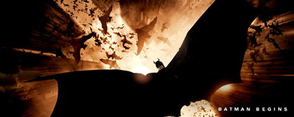

|
 |
 |
 |
Batman Begins
 Batman Begins is a 2005 superhero film based on the fictional DC Comics character Batman, co-written and directed by Christopher Nolan and starring Christian Bale, Michael Caine, Liam Neeson, Katie Holmes, Gary Oldman, Cillian Murphy, Tom Wilkinson, Rutger Hauer, Ken Watanabe, and Morgan Freeman. The film reboots the Batman film series, telling the origin story of the title character (Bale), from his alter ego Bruce Wayne's initial fear of bats, the death of his parents, his journey to become Batman, and his fight to stop Ra's al Ghul (Watanabe) and the Scarecrow (Murphy) from plunging Gotham City into chaos. It draws inspiration from classic comic book storylines such as The Man Who Falls, Batman: Year One, and Batman: The Long Halloween.
After a series of unsuccessful projects to resurrect Batman on screen following the critical failure and box office disappointment of Batman & Robin (1997), Nolan and David S. Goyer began to work on the film in early 2003 and aimed for a darker and more realistic tone, with humanity and realism being the basis of the film. The goal was to get the audience to care for both Batman and Bruce Wayne. The film, which was primarily shot in Iceland and Chicago, relied on traditional stunts and miniatures, while computer-generated imagery was used minimally.
Batman Begins opened on June 15, 2005, in the United States and Canada in 3,858 theaters. It grossed over $48 million in its opening weekend in North America, eventually grossing over $374 million worldwide. The film received positive reviews and is considered by many to be one of the best superhero films of its decade. The film was nominated for an Academy Award for Best Cinematography and three BAFTA awards. It is followed by The Dark Knight (2008) and The Dark Knight Rises (2012) in a continual story-arc, which has later been referred to as The Dark Knight Trilogy.
The Plot
As a child, Bruce Wayne falls down a dry well and is attacked by a swarm of bats, subsequently developing a fear of bats. While watching an opera with his parents, Bruce becomes frightened by performers masquerading as bats and asks to leave. Outside, mugger Joe Chill murders Bruce's parents in front of him. Orphaned, Bruce is raised by the family butler, Alfred Pennyworth.
Fourteen years later, Chill is freed in exchange for testifying against Gotham City mafia boss Carmine Falcone. Bruce intends to murder Chill in revenge, but one of Falcone's assassins does so first. Bruce's childhood friend, assistant district attorney Rachel Dawes, berates him for attempting to undermine the justice system, saying that his father would be ashamed. Bruce confronts Falcone, who tells him that real power comes from being feared. Bruce decides to travel the world, learning new skills and abilities to confront injustice. In Ladakh he meets Henri Ducard, who trains him as a member of the League of Shadows, led by Ra's al Ghul. After completing his training and purging his fears, Bruce learns that the League intends to destroy Gotham, believing it to be corrupt and beyond saving. Bruce rejects the League's cause and burns down their temple during his escape. Ra's is killed by falling debris, while Bruce saves the unconscious Ducard.
Bruce returns to Gotham intent on fighting crime. Inspired by his childhood fear, he takes up the vigilante identity of "the Batman" and sets up a base in the caves beneath Wayne Manor. He takes an interest in his family's company, Wayne Enterprises, now run by the unscrupulous William Earle. Company archivist Lucius Fox allows Bruce access to prototype defense technologies including a protective bodysuit and a heavily armored car called the Tumbler. To avert suspicion from his vigilante activities, Bruce poses as a shallow playboy.
Batman intercepts a drug shipment, provides Rachel with evidence against Falcone, and enlists honest Police Sergeant James Gordon to arrest him. When Falcone threatens to reveal psychiatrist Dr. Jonathan Crane's illicit activities if Crane does not declare him mentally unfit for trial, Crane uses a fear-inducing hallucinogen and a scarecrow mask to drive Falcone insane and has him transferred to Arkham Asylum. While investigating "the Scarecrow", Batman is exposed to the hallucinogen and left incapacitated. He is saved by Alfred and given an antidote developed by Fox.
When Rachel accuses Crane of corruption, Crane reveals that he has been pouring his fear-inducing drug into Gotham's water supply. He doses Rachel with it, but Batman saves her and subdues Crane, who claims to work for Ra's al Ghul. Batman evades the police to get Rachel to safety, administers the antidote, and gives her a vial of it for Gordon and another for mass production. Ducard reappears at Bruce's 30th birthday party and reveals himself to be the actual Ra's al Ghul. Having stolen a powerful microwave emitter from Wayne Enterprises, he plans to vaporize Gotham's water supply, rendering Crane's drug airborne and causing mass hysteria that will destroy the city. He sets Wayne Manor on fire and leaves Bruce for dead, but Alfred rescues Bruce.
Ra's loads the microwave emitter onto Gotham's monorail system, releasing the drug as the train travels toward the city's central water source. Batman rescues Rachel from a drugged mob and indirectly reveals his identity to her. He pursues Ra's onto the monorail and overpowers him just as Gordon uses the Tumbler's cannons to destroy a section of the track. Batman refuses to kill Ra's but also chooses not to save him, gliding from the train and leaving Ra's aboard as it crashes and explodes.
Bruce gains Rachel's respect but loses her love, as she decides she cannot be with him while he is Batman. Bruce buys a controlling stake in the now publicly traded Wayne Enterprises, fires Earle, and replaces him with Fox. Gordon is promoted to Lieutenant of the Gotham City Police Department, shows Batman the Bat-Signal, and mentions a criminal who leaves Joker playing cards at crime scenes. Batman promises to investigate.
Copyright © 2016 Cinema Nation. All rights reserved.
Unless otherwise indicated, all materials on these pages are copyrighted by the Cinema Nation. All rights reserved. No part of these pages, either text or image may be used for any purpose other than personal use. Therefore, reproduction, modification, storage in a retrieval system or retransmission, in any form or by any means, electronic, mechanical or otherwise, for reasons other than personal use, is strictly prohibited without prior written permission.